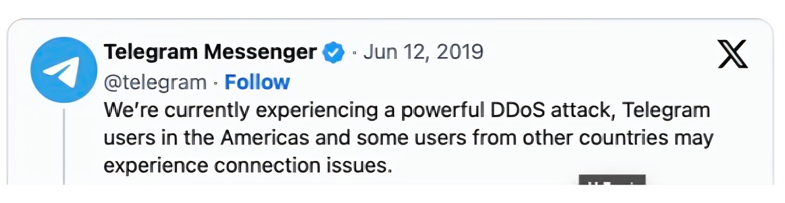
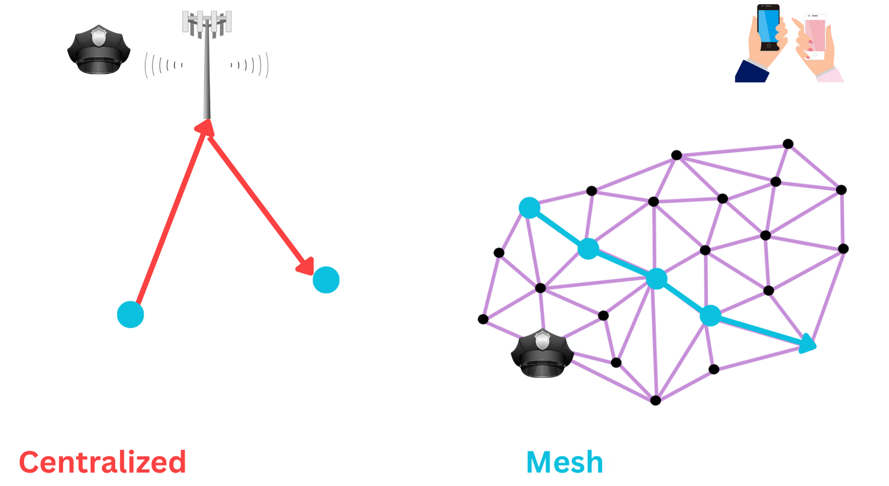
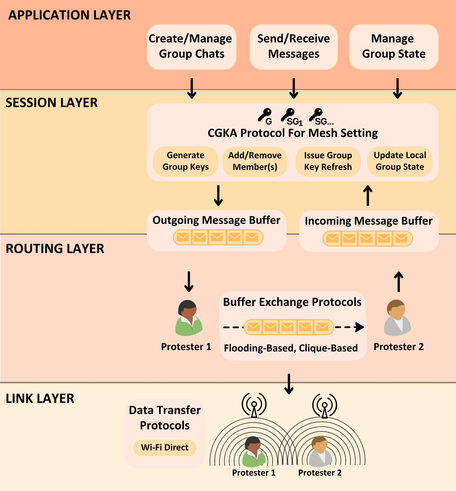
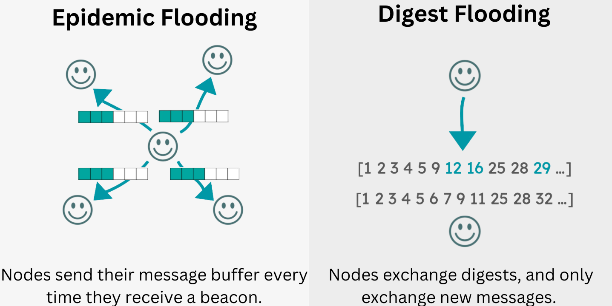
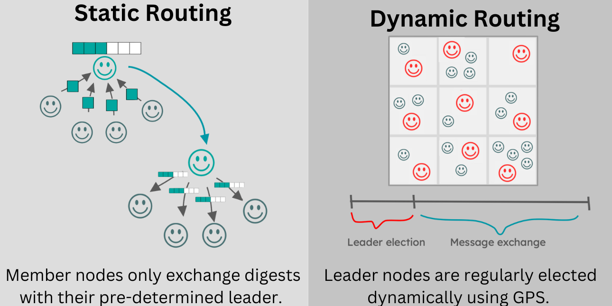
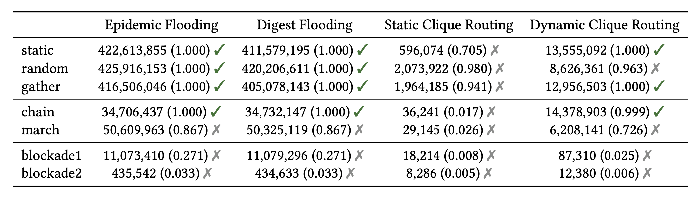

Amigo
Secure Group Mesh Messaging in Realistic Protest Scenarios
A project by David Inyangson*, Sarah Radway*, Tushar Jois, Nelly Fazio, and James Mickens.
Our paper is a part of the proceedings of the 2025 ACM SIGSAC Conference on Computer and Communications Security (CCS '25). You can find the full version of the paper on ePrint. This work was also presented as a contributed talk at the 2025 IACR Real World Cryptography Symposium (RWC '25), and has received coverage in IEEE Spectrum.
If you would like to run our experiments and explore the codebase yourself, you can also find our benchmarking code and simulations on GitHub. We have included detailed instructions and self-contained Docker environments.
*Both authors contributed equally to the work.

Protests are an important tool in the fight against authoritarian governments. Through protests, ordinary citizens can voice their opinions and bring visibility to their concerns. Often times both the success of a protest and the safety of those involved is heavily influenced by on-the-ground communication. Using tools like WhatsApp, Telegram, and Signal, protesters can collectively decide where and when to hold demonstrations, and how to respond to real-time events, like the arrival of police. This communication is especially important in the large-scale protest settings we consider where hundreds or thousands of people may be participating in densely crowded areas. Because of the importance of communication, authoritarian regimes are highly motivated to intercept and/or disrupt communication channels during protests.
Censorship Tactics
If an authoritarian regime wants to stifle activism, one obvious way is to shut down demonstrations before they happen. This may require eavesdropping on communication between protesters. One way this can be achieved is through cell-site simulators; tools that emulate cell towers and enable downgrade attacks that force connected phones to use unsafe or unencrypted communication protocols.
Another strategy is for an authoritarian regime to force an Internet shutdown. Internet shutdowns are periods of degraded or completely restricted access to content on the Internet. In these situations, protesters can no longer use applications like Signal and WhatsApp, since they rely on Internet connectivity. While an intentional Internet shutdown may seem extreme, as of 2023 there were a reported total of 283 shutdowns across the globe. Aside from full Internet shutdowns, authoritarian regimes have also been known to conduct targeted Denial-of-Service attacks against popular communication infrastructure.
Amigo: Mesh Messaging For the Protest Setting
Since protesters cannot rely on Internet-based messaging during Internet shutdowns, mesh-based communication is a viable option. In a mesh network, communication is done in a peer-to-peer nature; individuals directly communicate with each other using the Wi-Fi or Bluetooth capabilities of their phone. In fact, this idea isn't new. If you've ever used Airdrop, you've participated in peer-to-peer communication over Bluetooth Low Energy! There are various applications, like Bridgefy and Briar, that are designed for peer-to-peer communication. The problem, however, is that requirements for mesh-based communication tools for the general use setting do not align with the requirements for the large-scale Internet shutdown protest setting.
Based on a study by Albrecht et al., a suitable communication tool for protesters during Internet shutdowns needs to informed by the following:
- Protest communication occurs primarily in group chats.
- Groups must be able to securely add members as a protest unfolds.
- Groups must be able to remove members.
- Communications should be possible during an Internet shutdown.
- Communication should be anonymous.
While prior research works and tools like Briar and Bridgefy exist, they do not adequately address the above requirements. Unfortunately, this means in real-life scenarios protesters are resigned to using tools that put their safety at risk. As an example, consider the widespread 2019–2020 protests in Hong Kong. The protests erupted in response to the government’s attempt to pass the Extradition Law Amendment Bill (ELAB). The bill would have allowed Hong Kong citizens to be extradited to China; many Hong Kong citizens feared that the bill would further erode Hong Kong’s legal independence from China. This protest was marked by partial Internet blackouts, during which many protesters attempted to use Bridgefy. Bridgefy has been shown to not only fail to provide anonymity, but also message confidentiality. In addition, protesters reported that the tool simply was not able to handle the network load induced by the large number of protesters.
In short, protesters require a tool that is designed specifically for the protest setting. A tool that safeguards the confidentiality of messages, and the anonymity of participants. A tool that is oriented towards group communication and can be relied upon in large-scale protest environments that are marked by densely-packed people and protest-specific movement patterns that give rise to challenging network environments. Communication needs to happen even when the Internet is unavailable. We designed Amigo with these goals in mind.
Designing Amigo
Now that we have the proper background, let's get into the specifics of Amigo's design. We can break Amigo into individual layers, each layer playing a key role in providing protesters with secure and effective ways of communicating. The system design figure below has a lot of information, so we provide a brief summary of each layer.
Application Layer
At the application layer, users can take direct actions like creating groups, adding group members, and sending messages. These actions map to capabilities that a user would interact with when directly using the application's interface. Behind the scenes these actions, like sending messages, are protected by keys negotiated at the session layer
Session Layer
At the session layer, Amigo implements an efficient Continuous Group Key Agreement protocol, or CGKA for short. We'll get introduce the specifics of this CGKA later, but at a high level it enables a way for group members to mutually derive key material used to keep their communication confidential.
Routing Layer
The session layer sends and receives user-generated messages and CGKA-generated messages via the routing layer. Amigo is compatible with traditional flooding approaches, but we notably propose a novel dynamic clique routing approach tailored for the protest scenarios we consider. We'll get intro the specifics of this protocol as well.
Link Layer
At the bottom of the Amigo stack is the link layer. Amigo can utilize technologies like Wi-Fi and BLE for peer-to-peer communication.
Secure and Anonymous Group Messaging
Protesters require secure and anonymous group communication. This means that (1) their communication should remain confidential to group outsiders and (2) their communication should remain anonymous to group outsiders. One way that communication tools provide the former property is through end-to-end encryption. Tools like Signal allow two users to establish a pairwise key - a single key that both users utilize to encrypt their messages.
While this is fine when communicating between pairs of individuals, it quickly becomes inefficient when operating in group communication settings. Sending a single message to a group of individuals using a pairwise approach means sending the same message encrypted under each key that you share with each individual. This inefficiency is the primary motivation for continuous group key agreement protocols; these protocols allow groups to efficiently derive and rotate a shared key. Effiency is realized through a ratchet tree, a data structure that organizes group members and key material in a binary tree. In a ratchet tree, group members occupy leaf node positions, while intermedate nodes along with the root are associated solely with key material. Below is what a group's ratchet tree with one initial member might look like for Amigo's CGKA.
Below is what Amigo's CGKA might look like with two individuals, after a member is added and is occupying Node1. Without diving into the weeds, Gen() is used to derive updating key material given a seed, Δ. Node1, after they join the group, generates updating key material and uses the ⭐ operator to apply this new cryptographic state on the old. This star operator is what makes Amigo uniquely suited to the Internet-shutdown protest setting.
While other CGKAs like MLS, TreeKEM, and ART are out there, they are primarily designed with a centralized infrastructure in mind, leveraging online servers to aid in the group key agreement process. These protocols require that changes to state held in the ratchet tree (protocol messages) be applied in the same order by everyone - a consistent global ordering. This ordering is easy to achieve with the help of a centralized server, but nontrivial during an Internet-shutdown and over a mesh where messages may arrive in any order.
Amigo allows for a consistent ratchet tree state by leveraging the direction of Causal TreeKEM; instead of ratchet tree updates that overwrite state, we combine previous and existing state. In this way, we embrace the inconsistencies of the mesh network by enabling updates to be applied in any order. As long as group members recieves every state update, Amigo's CGKA will converge with eventual consistency and group members will derive consistent key material. So, members can apply protocol messages regardless of the order. We denote this combination operator using ⭐.Because we are working with elliptic curve cryptography, its relatively simple to combine key material. When working with elliptic curves, a public key pk is derived by multiplying a (secret) scalar sk with the curve's generator point P. Thus we can instantiate ⭐ as skx⭐y = skx + sky, pkx⭐y = (skx + sky) * P
Aside from enabling state synchronization within a mesh, Amigo provides end-to-end confidentiality by encrypting all messages sent within groups using keys contained within the ratchet tree. The keys used for a particular message correspond to the set of members who are the intended recipients. Via AES-GCM, encrypted messages are also authenticated. Amigo provides anonymity by not including any identifying metadata with messages. This means that clients utilize trial decryption; they attempt to decrypt every message they recieve in order to determine if it is intended for them or not. Last, but not least, Amigo provides forward secrecy and post-compromise security.
Efficient and Effective Routing
So now that we have end-to-end encrypted, anonymous, and authenticated messaging, we need a ways to disseminate these messages. Within a protest area group members may be close together; in these scenarios directly exchanging a message via Wi-Fi or BLE is a viable approach. In the cases, however, where group members are farther apart messages need to be propogated through the mesh until they are recieved by their intended recipient.
One common way of message propogation is via epidemic flooding. Simply put, an individual sends a message to everyone within vicinity. Recipients do the same with this message. Every message has a time-to-live (TTL), i.e., a maximum number of hops decremented each time the message is propogated. The idea is that once the TTL has reached zero, the message should have been recieved by the intended recipient. Digest flooding is similar, but with optimizations that attempt to limit the total number of messages network participants have to propogate.
While flooding-based protocols often achieve high delivery rates, they are notorious for consuming a lot of bandwidth. Bandwidth is precious within a mesh network, particularly in large-scale densely populated protest environments where congested network environments can lead to dropped messages and ineffective communication.
Clique-based routing provides a promising solution to the congestion problem. Instead of everyone propogating messages, a clique leader (a client within a limited geographic area) recieves messages from nearby protesters and propogates those messages to other clique leaders. Clique leaders also disseminate messages to those in their clique. In static clique routing, clique leaders and their respective followers never change. In reality, however, protesters move about and Amigo therefore proposes and implements a novel Dynamic Clique routing protocol.
In our Dynamic Clique routing protocol, there are election periods where clients within proximity of each other form a clique and elect a clique leader. These clique leaders then propogate and disseminate messages for their respective clique followers for a specified time period until new cliques are formed. Amigo’s leader elections are based on Android’s implementation where nodes choose a "willingness" value (0-100), indicating their readiness to serve as a clique leader. The node in each given region with the highest “willingness" value is elected as leader.
Our new Dynamic Clique routing protocol achieves up to 95% or higher delivery rates while sending far fewer messages than flooding-based protocols over the course of our simulations. This difference ranges from ∼2× to ∼50×. In other words, our simulations show that dynamic clique routing can achieve similar levels of message delivery at a fraction of the messages sent – important for smartphones, which are constrained by battery size and CPU capability, as well as for overall network stability.
Realistically Evaluating Amigo
Amigo is designed for large-scale protest settings, and protesters often move in planned and organized ways. To accurately capture the effectiveness of our both our CGKA and routing layers, we needed to realistically simulate real protest conditions. We needed to evaluate how well Amigo handled these conditions through metrics like end-to-end delivery rates. Through news articles, videos, photos, and protest guides we were able to identify common protester mobility patterns.
- Marches: A march involves a group walking together in the same direction.
- Human Chains: A human chain entails a line of stationary people who pass materials from one end of the line to the other.
- Gatherings: In the Hong Kong protest guide, the authors state that protests can also take the form of “gatherings with a specific focus.” Examples of such gatherings are musical performances and communal art projects.
- Blockades: A blockade occurs when protesters prevent entrance to a given space, e.g., anti-ELAB protesters blockaded the Cross-Harbor Tunnel to stop police from entering a university
Using ns-3, a discrete event simulator, we were able to transform these patterns into mobility models we could use to test the end-to-end delivery rates of chat and CGKA protocol messages in the presence of realistic movement patterns. This enabled us to discover compelling takeaways and areas for future work that prior research in this space failed to identify due to lower-fidelity simulations.
Takeaways and Future Work
Benchmarks of the Amigo CGKA showed the efficiency we desired. Running on a low-end budget smartphone, a protester would be able to process roughly 39 member removals, 62 key refreshes, or 7 member additions in one minute for a group size of 200 members. In a similar vein, our power consumption benchmarks showed that Amigo's CGKA would not unduly drain a phone's battery.
When it came to end-to-end delivery rates for our novel Dynamic Clique routing protocol, our high-fidelity simulations showed that Amigo achieves 95% or higher rates on multiple mobility models while sending far fewer messages than traditional flooding approaches.
The table below depicts how different routing protocols fared under different mobility models. This table shows the total message packets send under each message propogation strategy during the duration of our simulation. The green check indicates whether or not a consistent cryptographic group state was achieved by the end of the simulation. The values within parentheses are message delivery rates. It is interesting to note that in certain mobility models, none of the protocols fared very well. Additionally, in many of the mobility models, traditional flooding did not fare as well as we expected. This was surprising and leads us to an important takeaway.
Future work in this space needs to more adequately consider the complexities of mesh networking. Prior work, and we too at the beginning of this journey, assumed that the majority of the work was in the cryptography. However, the cryptography is only as effective as the underlying mesh that supports it. The reliability of the network impacts the reliability of key management. Lower layer complexities like network collisions, exacerbated by densely-packed environments, and complex mobility patterns can lead to network conditions that make building secure communication tools over a mesh non-trival. There is still a lot of work to be done in designing mesh routing algorithmns that can be effective in large-scale Internet shutdown settings: designing tooling that can support large-scale realistic simulations, algorithms that adjust to network congestion, and protocols that are robust to movement patterns.
TL;DR
To keep it short and sweet:
- Protesters living under authoritarian regimes require secure ways of communicating within groups during Internet shutdowns.
- Amigo combines a novel continous group key agreement protocol and a novel Dynamic Clique routing protocol to enable secure group communication over a mesh network.
- Our simulations and benchmarks show that while Amigo contributes a positive step forward in this space, more work needs to be done to solve the complexities of secure mesh communication in large-scale protest scenarios.
Our paper is a part of the proceedings of the 2025 ACM SIGSAC Conference on Computer and Communications Security (CCS '25). You can find the full version of the paper on ePrint. If you would like to run our experiments and explore the codebase yourself, you can also find our benchmarking code and simulations on GitHub. We included detailed instructions and self-contained Docker environments.